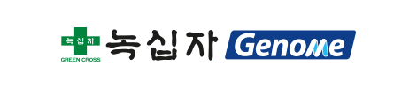

가족사소개
가족사소개
가족사소개
Family Site
-
주식회사 녹십자
- 녹십자는 1967년 창립 이래, 꼭 필요한 그러나 만들기 힘든 의약품을 개발해 온 생명공학 전문기업입니다.
- 혈액제제와 백신을 비롯한 전문의약품부터 습포제 제놀 등과 같은 일반의약품까지 폭넓은 제품군을 보유한 녹십자는 세계 4번째 유전자재조합 혈우병A 치료제 그린진 에프, 세계 두번째 헌터증후군 치료제 헌터라제 등의 개발에 성공하며 R&D 중심 기업으로의 명성을 이어가고 있습니다.
- 2013년 국내 최초로 태국에 혈액제제 플랜트를 수출, 수출 1억 달러 돌파 등 쾌거를 거둔 녹십자는 최근 북미 혈액제제 공장 설립 계약을 체결하여 ‘건강산업의 글로벌 리더’를 향해 새롭게 거듭나고 있습니다
- 홈페이지www.greencross.co.kr
- 설립년도1967년 10월
- 도로명주소(16924) 경기도 용인시 기흥구 이현로 30번길 107 (보정동) 녹십자
- 지번주소(16924) 경기도 용인시 기흥구 보정동 303번지
- 대표전화031) 260-9300
- 팩스번호031) 260-9413
주식회사 녹십자셀
- 항암면역세포치료제 ‘이뮨셀-LC’를 개발하여 2007년 간암 치료제로 품목허가를 획득한 세포치료 전문기업입니다.
- 이뮨셀-LC는 2008년부터 간암 3상 임상시험을 진행하여 2012년에 최종 완료하였습니다.
- 지속적으로 항암면역세포치료제 생산 관련 연구 및 줄기세포치료제 연구를 진행 중입니다. 그 외 세포치료제 생산시설을 활용한 위수탁사업도 진행하고 있습니다.
- 홈페이지www.greencrosscell.com
- 설립년도2002년 1월
- 도로명주소(08511) 서울시 금천구 벚꽃로 278 SJ테크노빌 6층
- 지번주소(08511) 서울특별시 금천구 가산동 60-19 SJ테크노빌 6층
- 대표전화02) 2101-0600
- 팩스번호02) 2101-0601
주식회사 녹십자엠에스
- 녹십자MS는 1972년 혈액형 진단시약을 시작으로, 1987년 국내 최초로 에이즈 진단시약을 개발한 데 이어 1990년 유행성출혈열 진단시약 등을 개발하는 성과를 거두었습니다.
- 현재 40여개 영역에서 250여 종 이상의 진단시약을 생산하고 있으며, 기존 진단시약 외에 HIV나 간염 바이러스 등 인류의 건강을 위협하는 질병에 대한 진단기술을 한 단계 높이기 위해 분자(molecular) 진단시약 기술을 개발 중입니다.
- 홈페이지www.greencrossms.com
- 설립년도2003년 12월
- 도로명주소(16924) 경기도 용인시 기흥구 이현로 30번길 107
- 지번주소(16924) 경기도 용인시 기흥구 보정동 303번지
- 대표전화031) 260-9300
- 팩스번호031) 260-9416
주식회사 녹십자웰빙
- 녹십자웰빙은 기존의 태반제제 전문 제약회사인 녹십자제이비피가 천연물 의약품 및 소재 전문회사인 녹십자HS와 녹십자의 WB사업부를 합병 및 인수하여 새롭게 출범한 회사입니다.
- 인류 100세 시대, 건강한 삶의 동반자로 개인 맞춤형 Healthcare Solution의 리더가 되기위해 다양한 개인 맞춤형 영양주사제와 건강기능식품을 공급하고 있으며, 아울러 천연물 유래의 의약품 및 건강기능식품에 대한 연구개발을 하고있습니다.
- 홈페이지www.greencrosswb.com
- 설립년도2004년 9월
- 도로명주소(13595) 경기도 성남시 분당구 황새울로 246, 도담빌딩 B동 7층
- 지번주소(13595) 경기도 성남시 분당구 수내동 9-3, 도담빌딩 B동 7층
- 대표전화031) 629-8600
- 팩스번호031) 629-8601
-

주식회사 녹십자랩셀
- 녹십자의 세포치료제 사업과 GC Labs의 제대혈 보관사업 부문을 통합해 설립되었습니다.
- NK세포 기반의 면역세포치료제와 함께 줄기세포를 활용한 난치성 질환의 치료제 개발을 핵심전략사업으로 선정, 향후 줄기세포치료 및 통합적 헬스케어 등으로 사업을 확장하고 관련 기술 및 제품을 기반으로 한 글로벌 비즈니스에 나설 계획입니다.
- 홈페이지www.gclabcell.com
- 설립년도2011년 7월
- 도로명주소(16924) 경기도 용인시 기흥구 이현로 30번길 107
- 지번주소(16924) 경기도 용인시 기흥구 보정동 341
- 대표전화031) 260-9600
- 팩스번호031) 260-9232
주식회사 녹십자지놈
- 녹십자 유전체분석 부문 자회사로서 산전 유전체 및 유전자 검사와 암유전체 분석, 개인별 약물반응 예측 등 질병 진단 서비스 사업을 진행하고 있습니다.
- 차세대 염기서열분석기와 대용량 유전자분석장비를 도입하여 질병 중심의 유전체 연구 및 분석을 통한 진단법 개발 등 개인별 맞춤의료를 실현해 나갈 계획입니다.
- 홈페이지www.gcgenome.com
- 설립년도2013년 7월
- 도로명주소(16924) 경기도 용인시 기흥구 이현로30번길 107
- 지번주소(16924) 경기도 용인시 기흥구 보정동 341번지
- 대표전화031) 260-9600
- 팩스번호031) 260-0620
-
Green Cross HK Holdings Limited
- 홍콩에 IPO를 목적으로 설립된 GC CHINA 의 지주회사로서 현재 중국녹십자 자금조달에 중추적 역할을 수행하고 있습니다.
- 홈페이지없음
- 설립년도2010년 7월
- 주소Room 1808, 18/F Tower II Admiralty Centre, Harcourt Road, Admiralty Hong Kong
- 대표전화852-3153-5651
- 팩스번호852-2804-1004
綠十字(中國) 生物制品有限公司(녹십자 생물제품유한공사)
- 녹십자의 글로벌 전략으로 설립되었으며 혈액분획제제를 생산하고 있습니다.
- 1998년 국가위생부의 현장 인증 및 안휘성 최초로 중국 GMP 인증에 통과하는 등 우수한 시설을 갖추고 있습니다. 현재 안휘성 6개 호남성 1개 총 6개의 혈참에서 원료를 공급 받고 있습니다.
- 홈페이지www.greencrosschina.com
- 설립년도1995년 10월
- 주소中國 安徽省 淮南市 經濟開發區 綠十字(中國) 生物製品有限公司
- 대표전화031) 260-9300
- 팩스번호031) 260-9416
安徽格林克医药锖售有限公 (거린커)
- GC CHINA의 자회사로 중국 내 의약품판매를 위해 설립된 의약 전문 도매 법인입니다.
- 중국 녹십자의 제품 및 상품 판매를 통해 GC CHINA의 성장을 기인할 것이며, 현재 영업본점인 상해를 중심으로 총 6개의 전국 지점에서, 상품을 판매하고 있습니다.
- 홈페이지www.greencrosschina.com
- 설립년도1995년 10월
- 주소中國 安徽省 淮南市 經濟開發區 綠十字(中國) 生物製品有限公司
- 대표전화031) 260-9300
- 팩스번호031) 260-9416
GCNA
- 미주 전역을 총괄하는 거점으로 활용하기 위해 세워진 GCBT의 지주회사로 현재 GCNA를 통해 효율적인 자금조달 및 집행을 하고 있습니다.
- 홈페이지없음
- 설립년도2014년 4월
- 주소1155 RENE-LEVESQUE W 40TH FLOOR MONTREAL QUEBEC CANADA
- 대표전화+1-514-956-2525
GCBT
- 세계 혈액제제 시장의 Main Market인 북미시장 진출을 위해 캐나다 퀘백주 몬트리올에 건설중인 혈액제제 전문회사로, 2019년에 현지에서 생산된 제품이 캐나다는 물론 북미 전역으로 판매될 예정입니다.
- 홈페이지www.greencrossbt.com
- 설립년도2014년 2월
- 주소7140 rue Albert-Einstein #200, Montreal, Quebec, Canada H4S 2C1
- 대표전화+1-514-956-2525
GCAM, Inc.
- 혈액분획제제 원료의 안정적 확보와 녹십자의 글로벌 전략에 따른 미국 시장 진출을 위해 설립되었습니다.
- 홈페이지http://gcamplasma.com
- 설립년도2009년 11월
- 주소1561 E. Orangethorpe Ave. Suite #205, Fullerton, CA 92831, U.S.A.
- 대표전화+1-714-738-6462
-
재단법인 목암생명과학연구소
- 목암생명과학연구소는 녹십자가 세계에서 세번째로 개발에 성공한 B형 간염 백신을 통해 얻어진 이익을 기금으로 출연해 1984년에 설립된 연구소입니다.
- 목암생명과학연구소는 생명공학기술 발전을 통한 사회 기여와 이익 창출을 도모하고 이를 연구 개발에 재투자함으로써 안정적이고 지속적인 연구 환경을 조성하기 위한 목적으로 설립됐습니다. 우리나라 민간 연구기관으로는 최초로 과학기술처(現 미래창조과학부)의 승인을 받아 설립된 비영리 연구재단법인입니다.
- 홈페이지http://www.mogam.re.kr
- 설립년도1984년 5월
- 도로명주소(16924) 경기도 용인시 기흥구 이현로 30번길 107
- 지번주소(16924) 경기도 용인시 기흥구 보정동 341번지
- 대표전화031) 260-9800
- 팩스번호031) 260-9808

의료법인 녹십자의료재단
- 1982년 임상검사 전문 의료기관으로 출발한 의료법인 녹십자의료재단은 세계 유수의 임상검사 관련 전문기관들과 전략적 협력관계를 맺고 있는 가운데, 특화된 특수검사를 바탕으로 첨단 장비의 도입과 우수한 연구개발 인력 양성 등 개방적 혁신과 차별화에 전력해 오고 있습니다.
- 국내 최초로 임상검사 전용 빌딩으로 설계된 연건평 3,700평 규모의 최첨단 임상검사센터에서 모든 검사를 안전하게 수행하고 있으며, 2008년 수탁기관으로는 최초로 ISO9001 품질경영시스템, ISO14001 환경경영시스템 인증을 동시에 획득했습니다.
- 녹십자의료재단 검사실은 최첨단 전자동화 시스템을 이용하여 365일, 24시간 신속하고 정확하게 검사를 수행하고 있으며, 의학유전체연구소, 대사의학연구소를 운영하며 국내에서 가장 많은 수의 특수검사를 실시하고 있습니다.
- 홈페이지www.gclabs.co.kr
- 설립년도1982년 7월
- 도로명주소(16924) 경기도 용인시 기흥구 이현로 30번길 107
- 지번주소(16924) 경기도 용인시 기흥구 보정동 303번지
- 대표전화031) 260-9600
- 팩스번호031) 260-9232
녹십자 아이메드
- 모두가 건강한 이상사회인 Healthpia를 구현하고자 1982년에 설립한 종합건강검진센터입니다. 첨단 의료 IT시스템과 효율적인 건강관리를 위한 검진케어 프로그램의 접목을 통해 모든 고객들이 건강한 삶을 영위할 수 있도록 요람에서 무덤까지 맞춤형 건강검진 서비스를 제공함으로서 질병을 예방해 주고, 언제 어디서나 평생 밀착 건강관리 서비스를 지향하고 있습니다.
- 녹십자 아이메드에서는 64ch MDCT, 1.5T MRI 등 첨단의료장비를 이용한 검진시스템과 풍부한 노하우를 보유하고 있는 전문 의료진들이 다양한 의료 서비스를 제공합니다. 우수 협력병원들과의 연계를 통한 진료시스템과 사후 건강관리를 위한 U-헬스케어 프로그램까지 고객들의 건강한 삶을 위해 최선의 해결책을 제시하는 건강증진센터로 거듭나고 있습니다.
- 홈페이지www.gcimed.com
- 설립년도1991년 10월
- 도로명주소(06647) 서울 서초구 서초대로 254 오퓨런스빌딩 4층
- 지번주소(06647) 서울 서초구 서초동 1553-5 오퓨런스빌딩 4층
- 대표전화1644-0808
- 팩스번호02) 2034-0504
-
주식회사 녹십자이엠
- 녹십자EM은 국내의 대표적인 바이오 전문건설기업으로 2001년 설립 후 매년 괄목할 만한 매출성장을 기록, GMP(우수의약품제조관리기준)공장 및 BL(생물안전등급)연구시설 등 바이오산업의 선두주자로 자리매김하고 있다.
- 국내 최대 규모의 녹십자 오창공장 및 국내 유일의 인플루엔자 생산시설인 녹십자 화순공장을 건설하였고, 2013년도에는 국내 최초 질병관리본부 BL4(생물안전등급4)연구시설을 건설함으로써 국내 바이오산업의 중추적인 역할을 담당하고 있다.
- 홈페이지www.gcem.co.kr
- 설립년도2001년 3월
- 도로명주소(16924)경기도 용인시 기흥구 이현로 30번길 107
- 지번주소(16924)경기도 용인시 기흥구 보정동 303번지
- 대표전화031) 260-9300
- 팩스번호031) 260-9610
농업회사법인 인백팜 주식회사
- 국내 최고 수준의 차단, 방역 시스템을 구축하고 철저한 품질관리 기준에 따라 유정란을 생산하는 양계 농장과 유정란을 백신생산에 적합한 수준으로 부화시키는 부화장을 운영하고 있습니다. 우수한 품질의 백신용 Egg를 안정적으로 공급함으로써 녹십자 독감백신의 성장 발전에 기여하고 있습니다.
- 홈페이지www.gclabs.co.kr
- 설립년도2007년 2월
- 도로명주소(58141) 전라남도 화순군 화순읍 산단길 40
- 지번주소(58141) 전라남도 화순군 화순읍 내평리 104-1
- 대표전화061) 379-2104
- 팩스번호061) 379-2115